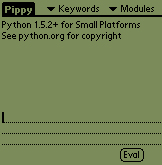

Pippy: Python for the Palm
Introduction
Welcome to the official site for Pippy, the port of Python
to the PalmOS. This project
is a continuation of work previously released
as a joint project between The
Aerospace Corporation and University of California, Irvine. Pippy
runs on the PalmOS (version 3.5 and higher) and passes a subset of the
standard Python regression test suite without failures or errors.
|
Pippy Screen Shots

|
Goals
Our goal is to incorporate changes to Python that reduce the effort of
porting this useful and expressive language to small and embedded
device platforms. The Palm is an appealing target platform for
Python and raises challenging technical requirements including:
- Reducing the virtual machine memory footprint
- Reducing the consumption of stack and dynamic heap space
- Integrating with the PalmOS
- Merging the required changes into the standard Python distribution
- Refactoring Python to accommodate smaller architectures
Status
Latest Version: Pippy 0.6beta
Pippy 0.6beta is a port of Python 1.5.2+ (post-string methods but
pre-Unicode). An upgrade to Python 2.0 is planned.
The Python Virtual Machine (PVM) is implemented as a shared
PalmOS library (GLib). Palm applications embed the PVM in a manner analogous
to desktop applications. One such application is an interactive
interface provided with this distribution. Other interfaces and
applications may be developed in a like manner.
Both pre-built .prc files and source code are available for Pippy.
Documentation
Differences between Pippy and Python-1.5.2+
Numerous modules have been removed from the core Python language, either to
reduce the code footprint or because the feature is inapplicable or is
ill-suited to the PalmOS. For instance, the parser/compiler was
removed to reduce the memory footprint and conserve the dynamic heap.
Consequently, embedded applications should not assume its presence
(however, setting a flag during the build process will include the
compiler if desired).
More specifically,
- floating point and complex numbers
- parser/compiler (included in this release but may be removed via
a configuration option at build time)
were removed to reduce the memory footprint,
were removed to reduce heap consumption, and
- dynamic linking
- signals
- path related code
were deleted as they are not applicable to the PalmOS platform.
All built in functions have been preserved. Those associated with removed
features (such as complex(), float(), etc) will raise a
MissingFeatureError.
Likewise for Python modules that include removed features (this happens
when compiling modules with a more capable version of Python).
Join the Effort
There are many opportunities for contributing to this effort. If you are
interested please read the Contribute to Pippy page first
then send mail to pippy@endeavors.com stating your
interests.
Pippy FAQs
We have started a FAQ for Pippy.
Undoubtablly it will grow over time.
Contacts and Mailing Lists
- General questions or problems
- pippy@endeavors.com
- Developer Issues
- pippy-dev@endeavors.com
- Announcements
- pippy-announce@endeavors.com
- Bug Reports
- pippy-bugs@endeavors.com
Acknowledgements
The Pippy development team would like to thank:
[Pippy Home |
Downloads |
Screen Shots |
Contribute |
FAQ]
[Endeavors Home]
© 2001 Endeavors Technology, Inc., All Rights Reserved.
Last modified: Wed Feb 7 10:32:13 PST 2001